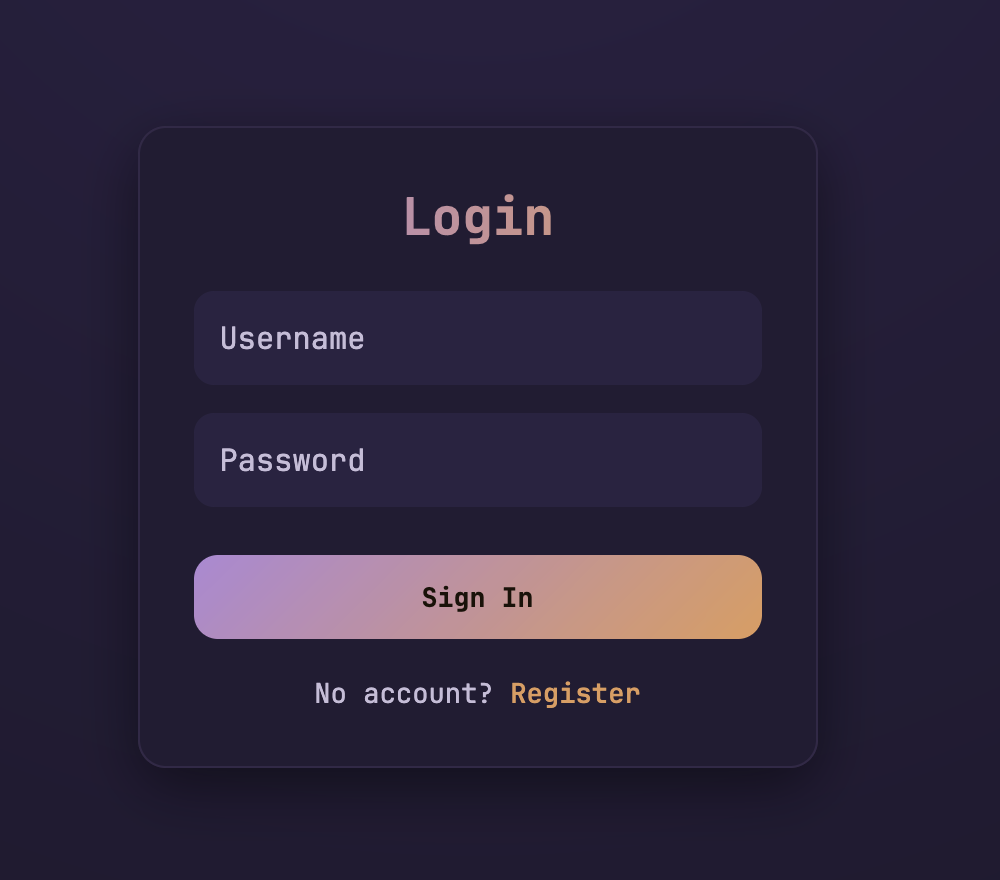
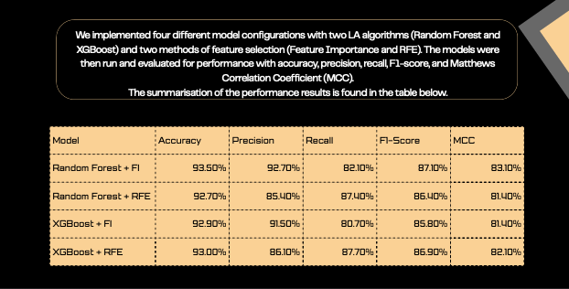
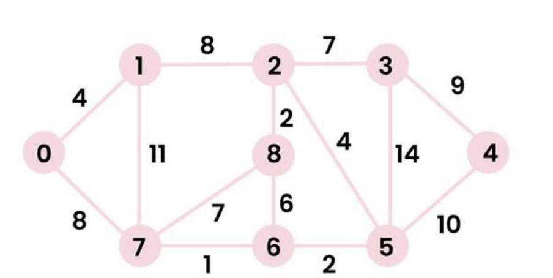
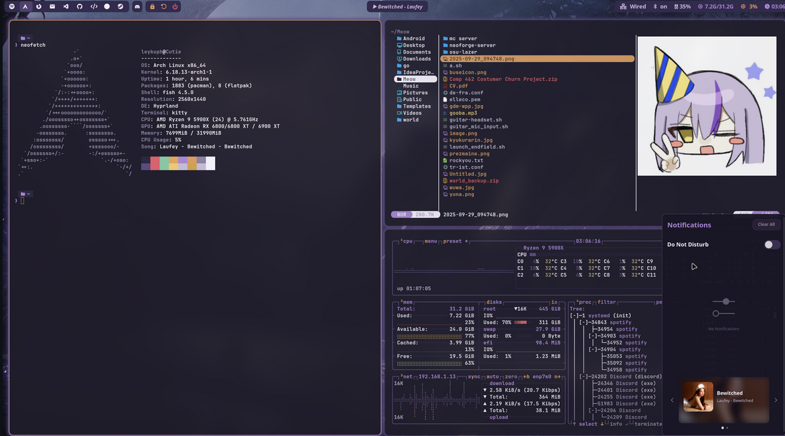
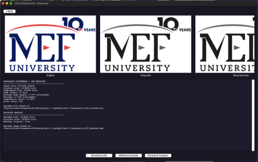
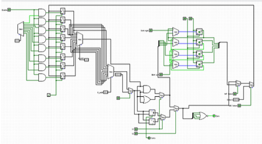

Featured Projects
A collection of works ranging from AI integrations to secure full-stack web applications, showcasing my journey in computer engineering.
Interior AI
MACHINE LEARNINGAn AI-powered interior design application that generates photorealistic room redesigns based on user uploaded photos and style preferences.

Secure Auth
FULL-STACKA comprehensive authentication system featuring JWT implementation, OAuth2 social login, and robust password encryption for enterprise-level applications.

Customer Churn Prediction
MACHINE LEARNINGA machine learning project predicting customer churn using Random Forest and XGBoost with feature selection strategies (RFE, feature importance). Reduces 1,163 features to 23 while preserving performance, evaluated with MCC and F1-Score under class imbalance.

PathFinder
ALGORITHMSA Java application that finds shortest paths between 17 Turkish cities using DFS, DFS-Shortest, and Dijkstra algorithms. Features an interactive Swing GUI and a benchmarking module with custom data structures (stack, dictionary) built from scratch.

dotfiles
LINUX / RICINGArch Linux Hyprland rice with a custom OC Palette theme featuring purple and orange accents on a dark nocturnal aesthetic. Configured with Waybar, Wofi, Kitty, Fish shell, Starship prompt, and managed via a bare git repo.

LZW Compression
DATA COMPRESSIONA progressive implementation of the Lempel-Ziv-Welch compression algorithm across 6 levels covering text, grayscale, and color image compression with difference encoding. Includes a full Tkinter GUI and metrics like entropy, compression ratio, and lossless verification.

Single-Cycle Computer
DIGITAL DESIGNA Logisim implementation of a single-cycle computer datapath with eight 4-bit general purpose registers, an ALU supporting arithmetic and logical operations, a shifter, and multiplexed data paths. Includes hard-wired control logic for a 16-bit control word.